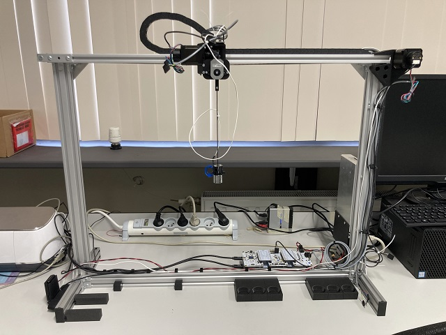

Lab Scale Gantry Crane Docs

This is the documentation of the lab scale gantry crane. It is a little gantry crane that has been used in various papers as a demonstrator. The documentation covers the build of the crane, the accompanying gantrylib module and exmaples using this module.
Documentation layout
- Home: this page
- Build: building instructions for the physical part of the crane.
- Arduino: documentation of the arduino scripts
- Examples: documentation of the examples
- gantrylib: api reference for the
gantrylib
Software prerequisites
Installing gantrylib
The examples rely on the gantrylib module. Since there's no official release (yet) we recommend installing it in editable mode, this also allows for on the fly code changes. In the root of this repository run:
python -m pip install -e .
We recommend doing so in a virtual environment.
Arduino sketches
To open and flash the Arduino sketches you can install the Arduino IDE
Opening CAD files
All CAD files are made with Fusion360 It's free for personal use. Your educational institution likely also has a license.
All files have already been exported to 3MF files, so you only need Fusion360 when you want to make edits.
Viewing the docs offline
The docs are built with MkDocs. If you want to host those locally rather than view them on GitHub pages you should additionally install it.
python -m pip install mkdocs mkdocstrings[python]
You can view the docs by running
mkdocs serve
Then opening http://127.0.0.1:8000/
Hardware prerequisites
3D Printer
Some parts of the crane need to be 3D printed. To do so you need a 3D printer and accompanying slicer.
For reference: our parts where printed on Prusa i3 MK4's and sliced with PrusaSlicer